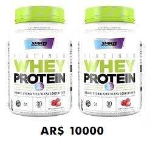
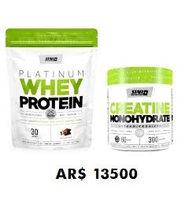
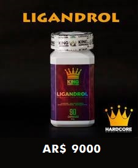
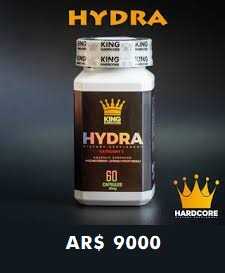

Combo 2 Whey Protein ¡nacional! de 30 Servicios cada una, de alto porcentaje proteico (82%), especial para el periodo de volumen a un precio excepcional, solo por esta semana a AR$ 10000

Combo excelente para el incremento de masa muscular y mejorar el rendimiento fisico, una proteina Whey de 30 servicios y una creatina monohidrata microonizada de 60 servicios, solo por esta semana a AR$13500En oferta solo por esta semana 2 Skull Shaker a solo AR$ 2000
Novedades


Los sarms son farmacos destinados a incrementar la hipertrofia y el rendimiento deportivo, a la vez que cataboliza los lipidos, por lo que resulta en una masa corporal mas magra y definida. Se ingiere en dosis de 25mg diarios para hombre y 12.5mg diarios para muejeres, se puede tomar 45min o una hora antes de entrenar.
Beneficios y Consideraciones de la suplementacion en el deporte
La suplementacion deportiva tinene diversos beneficios para el deportista entre los cuales podemos destacar:
Mejorar el rendimiento deportivo.
Incrementa la fuerza muscular.
Aumenta la resistencia fisica.
Contribuye a lograr un fisico mas definido y magro.
Favorece la recuperacion de los tejidos.
A su vez la ingesta de suplementos deportivos debe tener en consideracion que estara exceptuada de su consumo para aquellas personas que padezcan de alguna de las siguientes afecciones:
Diabetes tipo 1 o tipo 2
Intoleracia al TACC
Acne severo
Riesgos cardiacos
Sugerencias
Por sugerencias, pedidos o comentarios podes escribirnos o comunicarte con nostros en el enlace contacto